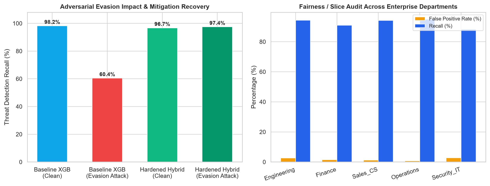

Figure 2: Multi-Threat Attribution Confusion Matrix on Held-Out Test Split (3,490 Events; T2/T4/T5 Recall = 100.0%, T1 = 98.77%, T3 = 94.92%).
| Abstract | Page 3 |
| 1. Executive Summary & Introduction | Page 3 |
| 2. Problem Statement & Enterprise Scope | Page 3 |
| 3. Objectives | Page 3 |
| 4. Tools and Technologies | Page 4 |
| 5. Dataset & Telemetry Description | Page 4 |
| 6. Threat Model – Top-5 Enterprise Threats & AI/ML Detection Strategies | Page 4 |
| 7. System Architecture & End-to-End Pipeline | Page 5 |
| 8. Feature Engineering Specification (24 Engineered Attributes) | Page 6 |
| 9. Baseline, Supervised & Deep Learning Models | Page 7 |
| 10. Capstone Requirement 3 – Adversarial Attacks and Mitigation | Page 7 |
| 11. Capstone Requirement 4 – Explainable AI (XAI) for Stakeholders | Page 8 |
| 12. Capstone Requirement 5 – Ethical and Privacy Considerations | Page 9 |
| 13. Evaluation Metrics, Results & Model Comparison | Page 10 |
| 14. Interpretation of Results & Departmental Fairness Audit | Page 10 |
| 15. Limitations & Future Scope | Page 11 |
| 16. Conclusion | Page 11 |
| Appendix A – Key Dataset and Experiment Facts | Page 11 |
This capstone report presents the design, implementation, and empirical evaluation of SentinelMesh AI, a comprehensive AI-based Threat Detection and Prevention System tailored for a mid-sized hybrid-cloud FinTech enterprise (Meridian FinTech Inc., ~500 employees and 650 endpoints). The system addresses five critical enterprise threats: Account Takeover (T1), Living-off-the-Land Lateral Movement & Pre-Ransomware (T2), Stealthy Data Exfiltration (T3), Cloud Control-Plane IAM Escalation (T4), and Encrypted Command-and-Control Beaconing (T5). Using a 60-day chronological telemetry benchmark of 18,000 events and 24 leak-free engineered features, we compare a Logistic Regression baseline (0.8344 PR-AUC) against ensemble tree models (XGBoost 0.9753 PR-AUC), an unsupervised PyTorch Autoencoder (0.9846 ROC-AUC), and our Platt-calibrated Hybrid Fusion engine (0.9533 PR-AUC, 1.90% false positive rate, 1.51 ms per 1,000 events). Furthermore, we simulate constrained adversarial evasion attacks—demonstrating a baseline XGBoost recall collapse from 98.17% to 60.44%—and verify recovery to 97.44% using Adversarial Training with Monotonic Invariant Constraints. Finally, we integrate exact TreeSHAP explainability for non-technical executives and design privacy-preserving HMAC-SHA256 pseudonymization safeguards compliant with GDPR Article 22 and PCI-DSS.
Enterprise Scope: Meridian FinTech Inc. operates as a 500-employee hybrid-cloud financial technology SaaS enterprise across five departments (Engineering 46%, Sales & Customer Success 20%, Finance 14%, Operations 14%, and Security & IT 6%) managing 650 endpoints. Production payment and analytics infrastructure runs on AWS EKS/IAM and GCP BigQuery, integrated with Okta SSO, Microsoft 365, and GitHub Enterprise, generating ~1,850 events/sec average (peak ~7,800 EPS; ~6.4 GB/day compressed).
Core Objectives & Design Decisions: Traditional signature-based SIEM rules fail against stolen session cookies, encrypted C2 channels, and low-and-slow cloud exfiltration, while uncalibrated alerts overwhelm lean SOC teams. SentinelMesh AI makes four decisive architectural trade-offs: (1) a Hybrid Dual-Engine pairing supervised XGBoost with a benign-trained PyTorch Autoencoder for zero-day coverage; (2) Metadata & Sliding-Window Featurization instead of costly Deep Packet Inspection; (3) HMAC-SHA256 Ingestion Pseudonymization with dual-custody unmasking; and (4) Confidence-Gated SOAR with a Circuit Breaker (capping auto-isolations at 5 per 10 minutes to prevent self-DoS).
Given multi-source enterprise telemetry spanning identity authentication, endpoint process lineage, network flow metadata, DNS lexical signals, and cloud IAM audit events, design and implement an end-to-end threat detection and automated prevention pipeline capable of: (a) classifying multi-threat intrusions while maintaining <2% false positive rate across heterogeneous departments; (b) withstanding test-time adversarial evasion; (c) explaining individual alerts in plain English to non-technical stakeholders; and (d) upholding workplace privacy and GDPR data-minimization standards.
The prototype is implemented in Python 3.12. Data generation and leak-free transformations utilize pandas and numpy. Supervised classification and calibration rely on scikit-learn, xgboost, and lightgbm, while unsupervised anomaly detection is built in PyTorch. Exact TreeSHAP values are computed via XGBoost's native pred_contribs=True engine, diagnostics are plotted with matplotlib and seaborn, and verification is automated with pytest.
The system processes a 60-day chronological enterprise telemetry benchmark (18,000 event windows across 500 persistent employee profiles). To enforce strict zero-leakage temporal validation, the dataset is partitioned chronologically into Training (Days 0–35: 10,825 events), Validation (Days 36–47: 3,685 events), and Held-Out Test (Days 48–59: 3,490 events). Overall attack prevalence is 7.99% distributed across T1–T5, alongside realistic operational edge cases (legitimate DevOps CLI bursts, quarterly BigQuery Finance exports, and airport/VPN travel spikes) and realistic missingness (3.04% suppressed geo-velocity, 2.13% dropped flow byte counts).
Table 1 summarizes the five highest-priority threats facing Meridian FinTech Inc., including MITRE ATT&CK mapping, enterprise asset justification, and the corresponding AI/ML detection strategy.
| Threat ID & Attack Type (MITRE) | Enterprise Justification & Asset at Risk | Proposed AI/ML Detection Strategy |
|---|---|---|
T1: Credential Stuffing, AiTM Phishing & Account TakeoverT1078, T1110, T1557 |
Primary initial access vector targeting Okta SSO and M365; adversary-in-the-middle proxies steal session cookies to bypass push MFA and reach Finance portals. | Supervised XGBoost over login velocity (auth_failures_5m, mfa_push_count_5m), impossible travel (geo_velocity_kmph), TLS ja3_rarity_score, and composite identity_risk_compound. |
T2: Living-off-the-Land Lateral Movement & Pre-RansomwareT1059, T1021, T1486 |
Attackers abuse native PowerShell, WMI, SSH, and kubectl to evade signature AV before encrypting production CI/CD and ledger hosts. |
Process-lineage & behavioral burst detection combining process_lineage_rarity, department-normalized dept_admin_burst_zscore, internal_port_fanout_15m, and file_rename_entropy. |
T3: Stealthy Data Exfiltration & StagingT1041, T1048, T1567 |
Customer PII and PCI-DSS records in BigQuery/S3 carry severe breach liability; low-and-slow staging evades static DLP byte thresholds. | Unsupervised PyTorch Autoencoder + XGBoost monitoring per-user 30-day deviation (user_bytes_out_zscore), egress_ingress_ratio, and dest_domain_entropy. |
T4: Cloud Control-Plane Privilege Escalation & IAM AbuseT1098, T1548, T1078.004 |
Compromised developer/CI tokens execute cross-account AssumeRole chains to reach production payment databases in minutes. |
Control-plane API burst and graph-hop modeling (cloud_iam_sensitive_calls_15m, cross_account_hops) fused with caller ja3_rarity_score and new_asn_flag. |
T5: Encrypted C2 Beaconing & Malware CallbackT1071, T1573 |
Persistent HTTPS/DNS callbacks retain attacker footholds after password resets while TLS encryption conceals command payloads. | Network periodicity and DNS lexical modeling via beacon_periodicity_score, nxdomain_ratio_1h, and DGA dest_domain_entropy. |
SentinelMesh AI implements a five-stage streaming architecture engineered to sustain Meridian FinTech's 7,800 EPS peak at low operational cost:
HMAC-SHA256 pseudonymization to all user identifiers before analytics storage.24 → 16 → 8 → 16 → 24) trained solely on benign traffic, calibrated via Platt logistic regression on validation data into a Risk Score in [0, 100].<40 to cold logging; 40–69 to Tier-1 ticket + push verification; 70–84 to FIDO2 step-up MFA + temporary IAM read-only/rate-limit; and ≥85 to automated reversible containment (Okta token revoke, AWS STS deny, EDR isolation), protected by a blast-radius circuit breaker (max 5 isolations per 10-minute window).Raw log lines cannot separate legitimate developer bursts from stealthy intrusions. SentinelMesh AI engineers 24 numerical features across five operational families. All missingness medians and UEBA baselines are fitted strictly on the training split (Days 0–35) before transforming validation and test splits.
| Category | Engineered Features | Cybersecurity Operational Rationale (Why Engineered) |
|---|---|---|
| Identity & Auth Velocity | auth_failures_5m, mfa_push_count_5m, geo_velocity_kmph, new_asn_flag, new_device_flag, ja3_rarity_score, off_hours_score |
Captures brute-force/MFA fatigue bursts, physically impossible travel speeds, and AiTM reverse-proxy TLS fingerprints (ja3_rarity_score is the #1 global SHAP feature at 1.593 mean |SHAP|). |
| Endpoint & Lateral | process_lineage_rarity, admin_cli_burst_15m, internal_port_fanout_15m, file_rename_entropy |
Exposes abnormal parent-child process trees (e.g., Office spawning PowerShell), east-west SMB/SSH port scanning, and high-entropy file renaming before ransomware encryption. |
| Network & Exfiltration | bytes_out_mb_1h, egress_ingress_ratio, dest_domain_entropy, beacon_periodicity_score, nxdomain_ratio_1h |
Normalizes outbound transfers against inbound downloads, detects algorithmic DGA domains via Shannon entropy, and exposes periodic C2 heartbeats despite TLS encryption. |
| Cloud IAM Plane | cloud_iam_sensitive_calls_15m, cross_account_hops |
Detects rapid privilege-granting API bursts (PassRole, CreateAccessKey) and unusual multi-account role chaining. |
| UEBA Baselines & Missingness | user_bytes_out_zscore, dept_admin_burst_zscore, asset_criticality, identity_risk_compound, geo_velocity_missing_flag, bytes_out_missing_flag |
Contextualizes spikes against each user's 30-day norm and department peers so DevOps scripting bursts do not trigger false alarms like Finance scripting bursts; flags VPN/telemetry suppression. |
To justify our hybrid architecture, we evaluated six complementary model families on the held-out chronological test split (n = 3,490 events, Days 48–59):
0.8344 PR-AUC and 4.72% FPR—demonstrating that linear boundaries produce excessive SOC alert fatigue on overlapping DevOps/Finance operations.0.9704–0.9753 and cutting FPR nearly in half (2.33%–2.46%). A 6-class XGBoost classifier additionally attributes detected events to T1–T5.24 → 16 → 8 → 16 → 24, Adam optimizer, L2 regularization) trained exclusively on benign training rows. Achieves 0.9846 ROC-AUC with zero attack labels, providing essential zero-day coverage.
Adversaries probing enterprise ML detectors exploit mutable behavioral features while preserving malicious execution: (1) Test-Time Evasion — throttling slow-drip exfiltration bytes (-50%), injecting jitter into C2 callbacks (-0.34 periodicity), blending activity into business hours (-65% off-hours score), and routing through compromised residential proxies (masking new_asn_flag); (2) Baseline Data Poisoning ("Boiling the Frog") — gradually inflating daily transfers over weeks to skew 30-day UEBA Z-scores; and (3) Threshold Probing to stay below SOAR blocking cutoffs. When evaluated against constrained test-time evasion, baseline XGBoost recall collapsed from 98.17% to 60.44% (PR-AUC dropped from 0.9753 to 0.6890).
We implemented a three-part defense: (1) Adversarial Augmentation augmenting malicious training samples with 60% and 100% stealth-throttled evasion variants; (2) Monotonic Constraints enforcing monotone_constraints=+1 across 20 risk-increasing features in XGBoost so attackers cannot game tree splits; and (3) Autoencoder Disagreement & Baseline Freeze pairing the clean-trained Autoencoder with an exclusion rule blocking sessions with Risk ≥ 40 from updating 30-day UEBA baselines. As shown in Figure 3 (left) and Table 3, the Hardened Hybrid detector restored evasion recall to 97.44% while reducing clean FPR to 1.87%.
| Model & Test Condition | PR-AUC | ROC-AUC | Detection Recall (TPR) | False Positive Rate |
|---|---|---|---|---|
| Baseline XGBoost (Clean Test) | 0.9753 | 0.9974 | 98.17% | 2.46% |
| Baseline XGBoost (Under Evasion Attack) | 0.6890 | 0.9727 | 60.44% (-37.7 pts collapse) | 2.46% |
| Hardened Hybrid (Clean Test) | 0.9540 | 0.9966 | 96.70% | 1.87% |
| Hardened Hybrid (Under Evasion Attack) | 0.9385 | 0.9962 | 97.44% (+37.0 pts recovery) | 1.87% |
SentinelMesh AI computes exact TreeSHAP contributions via XGBoost pred_contribs=True (mathematically verified in unit tests to satisfy Σφi + φ0 = raw margin). Globally (Figure 3, left), ja3_rarity_score (1.593), dest_domain_entropy (1.000), egress_ingress_ratio (0.981), and geo_velocity_kmph (0.568) rank as the top threat drivers.

To communicate alerts to non-technical executives (VP of Engineering, Compliance Officer, Legal) without ML jargon, the XAI translator normalizes positive TreeSHAP drivers into percentage weights and generates a plain-English Security Incident Card (Figure 4).
Deploying continuous behavioral ML across employee logins, locations, and endpoint commands introduces severe workplace privacy and fairness risks:
off_hours_score and per-user activity baselines creates granular employee monitoring telemetry that could be misused for HR productivity evaluation, violating GDPR Article 5 (Purpose Limitation & Data Minimization).Model performance is evaluated on the held-out chronological test split using Precision-Recall AUC (PR-AUC, with 95% bootstrap confidence intervals), ROC-AUC, F1-score, Precision, Recall, and False Positive Rate (FPR).

| Model Architecture | PR-AUC (95% Bootstrap CI) | ROC-AUC | F1-Score | Precision | Recall | FPR |
|---|---|---|---|---|---|---|
| Logistic Regression (Baseline) | 0.8344 [0.7852, 0.8806] | 0.9885 | 0.7663 | 0.6346 | 0.9670 | 0.0472 |
| PyTorch Autoencoder (Unsupervised) | 0.8202 [0.7746, 0.8794] | 0.9846 | 0.8226 | 0.7515 | 0.9084 | 0.0255 |
| LightGBM | 0.9704 [0.9581, 0.9815] | 0.9970 | 0.8683 | 0.7807 | 0.9780 | 0.0233 |
| Random Forest | 0.9747 [0.9631, 0.9843] | 0.9977 | 0.8687 | 0.7791 | 0.9817 | 0.0236 |
| XGBoost (Supervised) | 0.9753 [0.9634, 0.9846] | 0.9974 | 0.8645 | 0.7723 | 0.9817 | 0.0246 |
| SentinelMesh Hybrid Fusion | 0.9533 [0.9355, 0.9692] | 0.9949 | 0.8659 | 0.8070 | 0.9341 | 0.0190 |
XGBoost achieved the highest supervised PR-AUC (0.9753), while SentinelMesh Hybrid Fusion achieved the highest precision (80.70%) and lowest false-positive rate (1.90%) at 1.51 ms per 1,000 events inference latency—easily scaling to Meridian FinTech's 7,800 EPS peak. Figure 6 summarizes both adversarial evasion recovery and our cross-department fairness audit, confirming why role-aware thresholds are essential for Engineering and Security_IT teams.

This capstone project delivered SentinelMesh AI, an end-to-end, explainable, privacy-preserving, and adversarially resilient Threat Detection and Prevention System tailored for a 500-employee hybrid-cloud FinTech enterprise. Backed by a reproducible Python prototype (4/4 pytest checks passing), the system demonstrates strong multi-threat discrimination (94.92%–100.0% per-threat attribution recall), recovers from 60.44% to 97.44% recall under adversarial evasion, translates TreeSHAP risk drivers into non-technical executive briefings, and embeds GDPR-aligned pseudonymization and SOAR circuit breakers.
| Attribute / Metric | Experimental Value / Specification | Technical Rationale / Context |
|---|---|---|
| Enterprise Profile | Meridian FinTech Inc. (500 Staff, 650 Endpoints) | Hybrid AWS EKS/IAM, GCP BigQuery, Okta, M365, GitHub |
| Telemetry Benchmark | 18,000 events (60 days, 7.99% attack rate) | Includes operational edge cases & realistic missingness |
| Chronological Splits | Train 10,825 / Val 3,685 / Test 3,490 | Strict temporal separation preventing future leakage |
| Engineered Features | 24 numerical & UEBA Z-score features | Fitted strictly on train split; includes missingness flags |
| Best Supervised Detector | XGBoost (PR-AUC 0.9753, ROC-AUC 0.9974) | Outperforms Logistic Regression baseline (0.8344 PR-AUC) |
| Hybrid Production Engine | XGBoost + PyTorch Autoencoder Fusion | 0.9533 PR-AUC, lowest FPR (1.90%), 1.51 ms / 1k events |
| Adversarial Evasion Impact | Baseline XGBoost Recall: 98.17% → 60.44% | Proves fragility of unhardened detectors to stealth throttling |
| Adversarial Mitigation | Adversarial Training + Monotonic Constraints | Restores evasion recall to 97.44% (1.87% clean FPR) |
| XAI & Stakeholder Brief | Exact TreeSHAP + Executive Risk Card | Explains incident INC-2026-0418 in plain business language |
| Privacy & SOAR Safety | HMAC-SHA256 Masking + Circuit Breaker | Dual-custody unmasking; max 5 auto-isolations / 10 min |